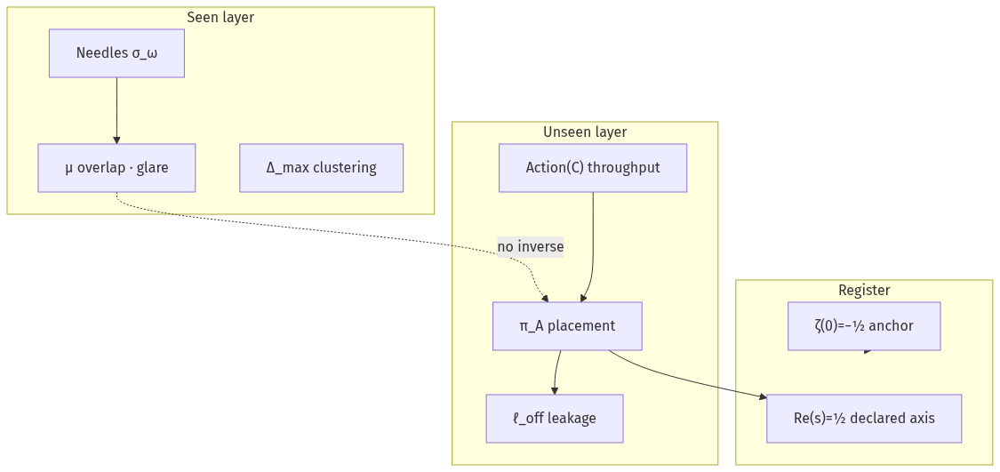
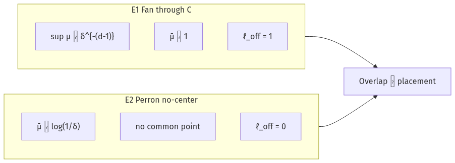
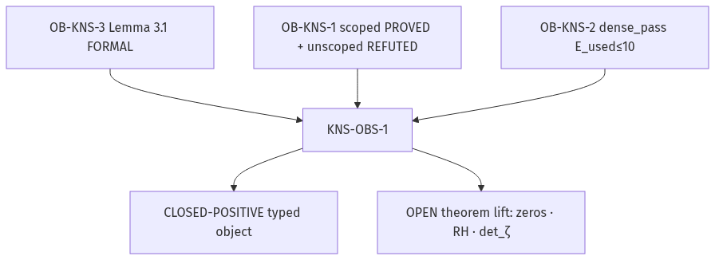
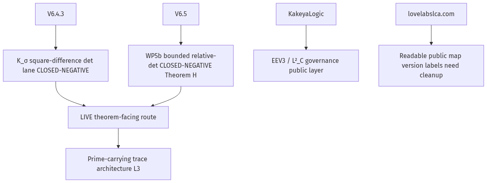

Light as Thought-Probe STRUCTURAL ANALOGY
needles = seen · Action(C) = unseen in overlap · Re(s)=½ = placement register · ζ(0)=−½ = anchor · E = L² = minimal credits for maximal typed coherence
needles σ_ω (seen)
μ glare / overlap
π_A placement register
center C
Seen — overlap layer
- Needles σ_ω, bloom / deltoid shadow
- μ(x), clustering Δ_max
- Union footprint U(T,Y)
Unseen — placement layer
- Action(C) throughput ingress
- π_A @ Π_½ = {Re s = ½}
- ℓ_off = ‖(I−π_A)ψ‖²
Fan: sup μ ≍ δ^{−(d−1)} while μ̄ ≍ 1 — high glare does not determine placement.
Probe Receipt
Deterministic · stdlib · sha pinned · re-run locally with kns_lb_probe.py
| Field | Value | Tag |
|---|
KNS(LB) Diagrams




CP-003 × KNS Energy Table LIVE FROM BUILD
Rows from build_kns_lb_app_data.py — KNS probe + CP-003 lanes
| Lane | Steps | E_used | ρ_Y | dense | Source |
|---|
CP-004 Independent Y · Command Plan
Re-run spec (no CP-003 seed-7 back-solve)
Public copy guard (light metaphor)
Program chain · centerline
Compute Graph — KNS ↔ CP wiring
Nodes = Python scripts & papers · edges = data/receipt dependencies
CP Scripts · sha pinned
Rebuild commands
CP-004 WP5b live diagnostic
cp_verify stamp (KNS)
Papers & Program Artifacts
Click row to copy relative path · open from Research root
Math References (PDF)
Local PDFs under Math-References/